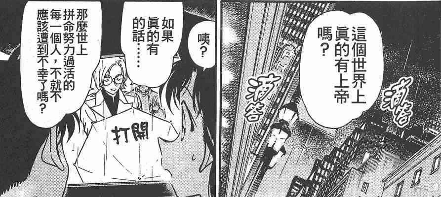
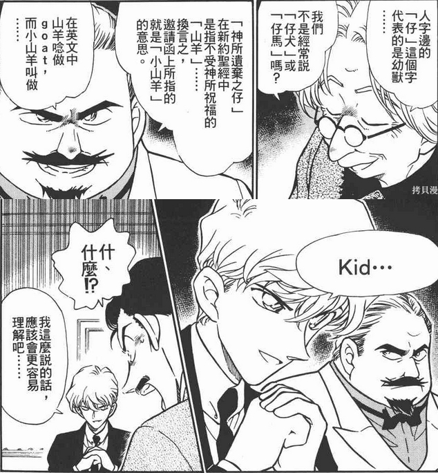

我又带着我的魔快分析来敲文吧的门了，以下文字皆为脑补，不妥即删（鞠躬）
若说名柯男主身上有着福尔摩斯/超人/圣经三大意向，那魔快男主也很轻易能看出来他的亚森罗宾/蝙蝠侠意向。但相较于有着较多明面宗教要素的名柯，魔快虽然有货真价实的路西法老哥，太真了反而让人觉得青山没打算拿红子来埋暗喻。
魔快里除了太阳光晕发生在寺庙所以提了几句佛教用语，唯一一次涉及宗教，应当只有14年10月午夜寒鸦篇，乔装成哈利·根津的黑羽盗一半场开香槟时，说了这样一句祝酒词。 于是我想到了名柯主线相关里，也像这样提到过上帝的几幕
所以我提出暴论：贝姐是“放弃了信仰上帝”，而这位上帝，与黑羽盗一信仰的上帝，是同一人。
若说名柯男主身上有着福尔摩斯/超人/圣经三大意向，那魔快男主也很轻易能看出来他的亚森罗宾/蝙蝠侠意向。但相较于有着较多明面宗教要素的名柯，魔快虽然有货真价实的路西法老哥，太真了反而让人觉得青山没打算拿红子来埋暗喻。
魔快里除了太阳光晕发生在寺庙所以提了几句佛教用语，唯一一次涉及宗教，应当只有14年10月午夜寒鸦篇，乔装成哈利·根津的黑羽盗一半场开香槟时，说了这样一句祝酒词。 于是我想到了名柯主线相关里，也像这样提到过上帝的几幕

莎朗是贝姐的身份之一，哈利也同样是盗一的假身份，因此根据吧里贝新论的流行观念“贝姐不相信有上帝”可以类推“黑羽盗一相信上帝”。若黑羽乌丸同源论成真，那么黑羽盗一与贝尔摩德，在师徒关系之外，是否还有更深一层的联系？所以我提出暴论：贝姐是“放弃了信仰上帝”，而这位上帝，与黑羽盗一信仰的上帝，是同一人。
在黄昏别馆的邀请函里，青山用“上帝弃之不顾儿子的幻影”来指代基德。侦探们则挑明了，kid的意思是“被上帝所诅咒的山羊”。
而《创世纪》里的山羊，则是很有名的“燔祭以撒”故事。上帝为了考验亚伯拉罕，叫他把独生子以撒杀了作祭品，献给上帝。正当亚伯拉罕要持刀杀子之时，有天使加以阻止，让亚伯拉罕把小树林中的山羊抓来代替以撒作燔祭。
而恰巧，在《亚伯拉罕启示录》中，亚伯拉罕身上的罪孽曾经被转移到上文提到的堕天使Azazil身上。因此我大胆推测，青山所采用的Kid山羊意向，是这两个故事的结合体——黑羽快斗是黑羽盗一献给上帝的祭品。
也就是说，黑羽快斗=以撒，黑羽盗一=亚伯拉罕。

这里先要纠个错，圣经里只有旧约提到过山羊意向，分别出自《创世纪》《利未记》《以诺书》。后两者写的是犹太人的祭祀仪式，选出两头山羊，一头献给上帝，一头献给堕天使Azazil。献给上帝的羊被宰杀；献给堕天使的羊会承担所有罪孽，被放逐至荒野。而《创世纪》里的山羊，则是很有名的“燔祭以撒”故事。上帝为了考验亚伯拉罕，叫他把独生子以撒杀了作祭品，献给上帝。正当亚伯拉罕要持刀杀子之时，有天使加以阻止，让亚伯拉罕把小树林中的山羊抓来代替以撒作燔祭。
而恰巧，在《亚伯拉罕启示录》中，亚伯拉罕身上的罪孽曾经被转移到上文提到的堕天使Azazil身上。因此我大胆推测，青山所采用的Kid山羊意向，是这两个故事的结合体——黑羽快斗是黑羽盗一献给上帝的祭品。
也就是说，黑羽快斗=以撒，黑羽盗一=亚伯拉罕。
2024-07-01 02:19 | bearaven:顺着这个黄昏之馆的山羊论，和山羊相对的是羔羊。ram/ラム2024-07-01 02:56 | 贴吧用户_5N4ba8Q:回复 bearaven :绵羊被赐福，山羊被放逐，不知道是不是对乌丸家内部的隐射，黑羽被放逐了2024-07-01 03:17 | bearaven:回复 贴吧用户_5N4ba8Q :仔细想想，这个暗号来自于怪盗基德的英文kid the phantom thief，而kid这个名字是优作起的，不管其中多少设定是事后想到的，目前看来在黄昏之馆借用基德之名起的这个代号是挺黑色幽默的。 这对兄弟虽然立场那样，感情上却不会上演圣经那对最有名兄弟的剧目呢。2024-07-01 03:29 | 贴吧用户_5N4ba8Q:回复 bearaven :我现在觉得青山就是故意的了……挑在黄昏之馆这个乌丸居所来揭示kid的含义，黑羽乌丸同源的可能性越来越大。 不过盗一是不是该隐这个我持保留态度，不然未免太恶趣味了2024-07-01 03:35 | EdwardClow:回复 贴吧用户_5N4ba8Q :天照和月读也是乌丸黑羽同源的暗示2024-07-01 03:40 | bearaven:回复 贴吧用户_5N4ba8Q :黑色的日之丸和黑色的八咫乌，符号上太接近了。 黄昏也是昼夜之交，可能同时看到太阳和月亮的时刻。2024-07-01 03:50 | bearaven:回复 贴吧用户_5N4ba8Q :如果要说源头是什么……故事外的上帝倒是很明显，宇宙的创造者，青山。那个黑帽子也很有标志性。 这边的源头在故事里大概也是青山的一个侧面，和他故乡有名的故事相关的那种。2024-07-06 04:15 | bearaven:回复 贴吧用户_5N4ba8Q :大概想到了一种可能，青山符号映射会同时有东西。日本这边的话，青山可能在把自己作品和三贵子-三神器对上。如果是这样，魔快片场的宝石，真货可能是类似勾玉的什么。2024-07-06 10:02 | 贴吧用户_5N4ba8Q:回复 bearaven :说到三神器，我想起来奇妙屋宇大冒险那一话，刚好也是基德出场，开头小哀也提到了“潘多拉魔盒”，不知道算不算暗示2024-07-06 10:55 | bearaven:回复 贴吧用户_5N4ba8Q :是的，一个来源就是那个。 写着“龍”的剑，青山有没有想起用龙神剑的铁剑呢。 魔快片场有月（下的魔术师）和玉（宝石）的主元素， 名柯的镜，哥梅拉那个案子，映不出自己样子的镜子；纽约篇的大镜子；列车诡计的镜子；浩司留下揭示乌丸这个dying message的化妆镜；还有，2024-07-06 10:59 | bearaven:回复 贴吧用户_5N4ba8Q :眼镜超人。掩盖自己身份，同时能追查真相的“镜”，江户川柯南这个角色的象征符号。 如果是这样，也能理解为什么哀的周边会出现天照了，不是本人提的话真的很难联想到。天照-八咫镜，又叫真經津之鏡。 真相和自我认知，搞清楚自己是谁，很适合镜子的主题。2024-07-06 21:42 | 贴吧用户_5N4ba8Q:回复 bearaven :那这么看青山的三部长篇某种意义上对应三神器？魔快的玉，剑勇的剑，名柯的镜。说起来魔快潘多拉主线正式展开也是剑勇快完结时搞的……算了这好像有点强行对照，毕竟不能把剑勇真合并进名柯世界观2024-07-06 22:33 | bearaven:回复 贴吧用户_5N4ba8Q :是有强行感啦，可靠度最多三成。 非要说的话，是因为从m27感觉到了一种，让之前的作品角色有机会上银幕的执念，然后是最近的铁剑重新动画化。看会不会追加联动魔快和名柯的内容吧。2024-07-06 22:41 | 贴吧用户_5N4ba8Q:回复 bearaven :快青是出现在过剑勇漫画里的，他们初中和莎也加是同班同学，高中是隔壁班，青山老早之前就想搞他的青山宇宙了。不过这也只是单纯串场而已，扯暗喻确实是有点玄乎哈哈
怪盗基德的主线任务，当前版本依旧是“寻找长生不老石潘多拉”。那么结合一下黑羽乌丸同源论，如今的快斗也是被当做了枪使，与理论A药有着相同功效的潘多拉，便是【上帝】真正想要的东西。
而贝姐对于A药是什么态度呢？厌恶，想要杀了作为研究者的小哀。那么是否，贝姐的“不相信上帝”，实则是她对于这类长生不老相关物品的反抗呢？
不相信上帝的前提是知道有这样一个【上帝】，黑羽盗一在列车篇依旧相信着【上帝】，或许，上帝一直都在。
根据流行的【贝姐boss女儿论】，贝姐和盗一应当是也有血缘关系的，那乌丸家的亲属一脉为何会如此分道扬镳？再继续下去就是纯纯扯淡，那就当我在抛砖引玉吧（笑）
而贝姐对于A药是什么态度呢？厌恶，想要杀了作为研究者的小哀。那么是否，贝姐的“不相信上帝”，实则是她对于这类长生不老相关物品的反抗呢？
不相信上帝的前提是知道有这样一个【上帝】，黑羽盗一在列车篇依旧相信着【上帝】，或许，上帝一直都在。
根据流行的【贝姐boss女儿论】，贝姐和盗一应当是也有血缘关系的，那乌丸家的亲属一脉为何会如此分道扬镳？再继续下去就是纯纯扯淡，那就当我在抛砖引玉吧（笑）
最后瞎扯几句百度百科到的以撒：
基督教里有说法“以撒是耶稣的表象”，以撒和耶稣的出生都是上帝的意志使然；以撒是亚伯拉罕的独生子，耶稣是上帝的独生子；以撒甘愿被献祭，耶稣甘愿担当世人的罪死在十字架上。
众所周知名柯里的耶稣是大男主，而新一确实是从快斗的形象衍生出来的，这是否也能作为一丝佐证呢？
以上。纯纯暴论，不负责瞎猜，猜错不负责（）
基督教里有说法“以撒是耶稣的表象”，以撒和耶稣的出生都是上帝的意志使然；以撒是亚伯拉罕的独生子，耶稣是上帝的独生子；以撒甘愿被献祭，耶稣甘愿担当世人的罪死在十字架上。
众所周知名柯里的耶稣是大男主，而新一确实是从快斗的形象衍生出来的，这是否也能作为一丝佐证呢？
以上。纯纯暴论，不负责瞎猜，猜错不负责（）
贝尔摩德名字是Chris，隐喻上帝
名柯中的宗教梗：
基督教中著名的“三位一体”说：耶和华有三个位格，分别是
圣父：耶和华本身。
圣子：基督。
圣灵：我们首先要注意的是：基督可以看成是耶和华在人间的“代表”，帮助耶和华拯救世人：这和乌丸和沙朗的关系有某种意义上的对应——沙朗现阶段帮助乌丸代管组织。
其次我们注意“圣灵”是“唯一能施行救恩使人重生的那一位”。还记得贝尔摩德易容成新出医生吗？众人都夸奖这个假的新出，这正好和“圣灵”的属性对应。另外，在关于“圣灵”的介绍中出现了“代替主耶稣”这个说法，这又和“基督的化身”对应。
所以，乌丸莲耶、沙朗·温亚德以及贝尔摩德分别对应耶和华（圣父）、基督（圣子）和圣灵，他们是“三位一体”的——沙朗帮助乌丸代管组织、贝尔摩德用沙朗的名字活动，而核心就是乌丸。
基督教中著名的“三位一体”说：耶和华有三个位格，分别是
圣父：耶和华本身。
圣子：基督。
圣灵：我们首先要注意的是：基督可以看成是耶和华在人间的“代表”，帮助耶和华拯救世人：这和乌丸和沙朗的关系有某种意义上的对应——沙朗现阶段帮助乌丸代管组织。
其次我们注意“圣灵”是“唯一能施行救恩使人重生的那一位”。还记得贝尔摩德易容成新出医生吗？众人都夸奖这个假的新出，这正好和“圣灵”的属性对应。另外，在关于“圣灵”的介绍中出现了“代替主耶稣”这个说法，这又和“基督的化身”对应。
所以，乌丸莲耶、沙朗·温亚德以及贝尔摩德分别对应耶和华（圣父）、基督（圣子）和圣灵，他们是“三位一体”的——沙朗帮助乌丸代管组织、贝尔摩德用沙朗的名字活动，而核心就是乌丸。
2024-06-30 10:09 | 贴吧用户_5N4ba8Q:嗯嗯受教了，那贝姐对于自己的这个上帝身份是自我否定的状态吗？想起来we can be both of god and the devil2024-06-30 10:16 | EdwardClow:回复 贴吧用户_5N4ba8Q :我理解宗教梗更像是一种给读者看的场外暗示，所以贝姐不会意识到自己是上帝，她反而认为自己的母亲真莎朗是上帝2024-06-30 10:27 | 贴吧用户_5N4ba8Q:回复 EdwardClow :啊哈，所以“果然不存在上帝”其实是一种对母亲失望的反应吗？或者说是对组织关于长生不老的研究（按我这个理论等同于活人献祭）？2024-06-30 10:28 | EdwardClow:回复 贴吧用户_5N4ba8Q :我的理解是这样2024-07-01 02:11 | bearaven:回复 EdwardClow :克里斯 温雅德 。耶稣 葡萄园。 逆裁那些逆天名字也不是给作品里的人看的…… 结构上就会造成毛利小五郎这种名字在剧本外确实是按推理小说角色起的，作品内却不是。 倒是有例外—江户川柯南/灰原哀。无论作品内外，都是按这个规则取出来的名字。 克里斯如果是假身份，那也是这类，2024-07-01 02:16 | EdwardClow:回复 bearaven :毛利小五郎等人的名字来源于现实作家和其他侦探类型小说，但贝姐名字源自宗教梗，名柯中的宗教梗/神话梗/日本历史梗都是很值得重视的2024-07-01 02:20 | EdwardClow:回复 bearaven :撒旦、紫色手帕、13、最后的晚餐……都是值得关注的信息2024-07-01 02:23 | bearaven:莎朗的玫瑰。 纽约篇两个案子，一个sharon 一个 rose。2024-07-01 02:26 | EdwardClow:回复 bearaven :那些基督徒把基督看做“莎朗的玫瑰花”2024-07-01 02:37 | bearaven:回复 EdwardClow :所以那个天使可以埋很多东西，不是粉红泡泡公主梦的那种2024-07-01 02:40 | EdwardClow:回复 bearaven :克里斯认证的Angel恐怕没那么简单，也只有sr会把小兰这个天使当做美称了2024-07-01 02:49 | bearaven:回复 EdwardClow :回归本意，天之使徒，传递God的信息的。侦探/福尔摩斯-日本警察界的救世主；圣诞，星；我们既是上帝也是恶魔。 三选一。2024-07-06 21:34 | 贴吧用户_5N4ba8Q:回复 EdwardClow :我在新约里找到基德名字出处了，是耶稣把好人比作绵羊ram坏人比作山羊goat，然后把坏人驱逐"into the eternal fire prepared for the devil and his angels!" 所以恶魔的使者也可以被称为angel，还能与贝姐说的“both god and the devil”对应上。2024-07-06 21:36 | EdwardClow:回复 贴吧用户_5N4ba8Q :有理有据2024-07-06 21:49 | 贴吧用户_5N4ba8Q:回复 EdwardClow :然后延伸点想，ram能和RUM对应。所以RUM是上帝钦点的好人而KID是坏人，但god同时是devil，因此被放逐的山羊才是正义的一方（快斗绝对不是黑方）。另外盗一也是kid，但不死的山羊只能是羊头的撒旦本人，所以黑羽盗一同样是恶魔（黑方）而快斗是替罪羊……我是这么想的


我在6楼解读了圣灵的属性是“施行救恩”，所以纽约篇天台上贝姐扮演的新一说出来那句名台词【救人是不需要理由的】并不奇怪，因为这是圣灵的属性。
2024-07-01 00:27 | 贴吧用户_5N4ba8Q:虽然这话让她这个杀了茱蒂老师新出医生全家的人说莫名有点地狱笑话了，黑方限定圣灵是吧2024-07-01 01:43 | EdwardClow:回复 贴吧用户_5N4ba8Q :我对贝尔摩德是否杀朱蒂全家持保留意见，20年前的那个事件很怪，朱蒂看到的是已经倒下的父亲，还有贝姐不戴手套去拿朱蒂父亲的眼镜……2024-07-20 16:52 | 耶和华仿聚:回复 贴吧用户_5N4ba8Q :朱蒂老师的先暂且搁议，新出医生的不是明确失败的吗？FBI制造一场假车祸，让贝姐以为新出死了，其实是被转移走了，最后也是贝姐被成功抓包的原因之一2024-07-20 18:18 | 贴吧用户_5N4ba8Q:回复 耶和华仿聚 :可是杀人未遂也是罪名啊，不能说因为她没成功就说她没有罪吧（除非后面打补丁说她是故意的）
话说回来，看了M27彩蛋揭开优作盗一兄弟那段里优作又提到了暗夜男爵，好像他又开始写暗夜男爵了这和主线会有关系嘛
2024-07-04 19:02 | 贴吧用户_5N4ba8Q:我的猜想是暗夜男爵是以黑羽盗一为原型的，当然这纯属主观臆测，看青山怎么填父辈组的坑了（所以他什么时候画务武）2024-07-04 21:35 | 陶乐西😁:回复 贴吧用户_5N4ba8Q :但是暗夜男爵又是组织病毒和乌鸦有关嘛2024-07-04 21:42 | 贴吧用户_5N4ba8Q:回复 陶乐西😁 :嗯，所以那个病毒为什么会这么命名也很令人在意，说不定是盗优他们爸爸的别称（按年龄是乌丸儿子或者孙子）2024-07-04 22:16 | 陶乐西😁:回复 贴吧用户_5N4ba8Q :说到务武是不是要开始boss篇了每逢50百是大事件这次1150话后应该是朗姆篇结束了，上次优作写绯色的搜查官是波本篇结束的时候也暗示了朗姆要出场了，朗姆篇开始好像就是秀吉世良玛丽的故事2024-07-04 22:37 | 贴吧用户_5N4ba8Q:回复 陶乐西😁 :都怪老贼动不动就休刊，罪大恶极口牙2024-07-05 01:24 | 陶乐西😁:名柯想要完结估计还得等十年
回复 贴吧用户_5N4ba8Q :所以黑羽乌丸说不准有关系，所以优作盗一是兄弟应该是上半年最大的主线了2024-07-05 02:48 | 贴吧用户_5N4ba8Q:回复 陶乐西😁 :想到青山2024上半年名柯就更新了两个案子，笑着笑着就哭了


虽然但是，青山访谈明确过魔快找潘多拉那个组织和名柯黑组是不同的组织
2024-07-04 22:36 | 贴吧用户_5N4ba8Q:看着也不像啊，动物园至今只有个snake在干活次次被快斗当小孩耍，但在列车篇快斗对酒厂的评价是“危险到不行的人”，完全就不是一个档次的。 青山老会打太极了，组织不同不代表乌丸集团就不想找潘多拉，完全可以解释为动物园声势更浩大一些，而乌丸集团只有盗一在找潘多拉，因此才起了冲突2024-07-04 23:00 | 上総守信長ºº:回复 贴吧用户_5N4ba8Q :真是这样就精彩了
黑羽盗一是贝尔摩德的师父，贝尔摩德信仰他倒也合理
加一点暴论。
去翻了下创世纪的原文，亚伯拉罕拿来替代以撒献祭的，其实是绵羊……
Abraham looked up and there in a thicket he saw a ram caught by its horns. He went over and took the ram and sacrificed it as a burnt offering instead of his son.
绵羊，ram，RUM
快斗是以撒，盗一是亚伯拉罕，上帝是乌丸莲耶。但是最终黑羽盗一没有献祭儿子而是杀了一只ram替代……
这太乐子人了，朗姆篇不会以这样的方式结束吧
（你就说基德进没进主线吧，献祭了但是没完全献祭，那就是没进主线嘛）
去翻了下创世纪的原文，亚伯拉罕拿来替代以撒献祭的，其实是绵羊……
Abraham looked up and there in a thicket he saw a ram caught by its horns. He went over and took the ram and sacrificed it as a burnt offering instead of his son.
绵羊，ram，RUM
快斗是以撒，盗一是亚伯拉罕，上帝是乌丸莲耶。但是最终黑羽盗一没有献祭儿子而是杀了一只ram替代……
这太乐子人了，朗姆篇不会以这样的方式结束吧
（你就说基德进没进主线吧，献祭了但是没完全献祭，那就是没进主线嘛）
2024-07-24 04:55 | 贴吧用户_0UXANEE:孩子们啊，你们真的享受这痛苦的欢愉吗？……谁能承担谁的痛苦……
业火的向日葵的海报，ラム（朗姆）就是指羊
2024-07-06 22:19 | 贴吧用户_5N4ba8Q:又有了点暴论，大佬可以看楼下一层
另开一层回复爱德华大佬
虽然部分原因是因为15年是羊年吧，但巧合是可以被利用的。在M19同年1412的新年祝福里，有基德变出绵羊，然后把基德的衣服扔到绵羊身上自己变成快斗的操作 新年祝福最后也出现了这样的场景
把中间的青子看做审判者的话，那她左手边是山羊kid，右手边是绵羊ram，符合新约的构图。巧妙的是此时ram俨然成了基德的替身。如果是暗喻RUM是燔祭以撒里替代快斗的那只绵羊，联系M19的海报似乎也能作为一点论据？
新年祝福最后也出现了这样的场景
把中间的青子看做审判者的话，那她左手边是山羊kid，右手边是绵羊ram，符合新约的构图。巧妙的是此时ram俨然成了基德的替身。如果是暗喻RUM是燔祭以撒里替代快斗的那只绵羊，联系M19的海报似乎也能作为一点论据？
（盗一向上帝祷告的午夜寒鸦是青山在两个月之前画的，名柯那时候更新到86卷朗姆篇刚开始，时间上也有逻辑成立。1412大概率被青山监修过，提前揭露了魔快不少设定，因此也能算是参考资料之一吧）
虽然部分原因是因为15年是羊年吧，但巧合是可以被利用的。在M19同年1412的新年祝福里，有基德变出绵羊，然后把基德的衣服扔到绵羊身上自己变成快斗的操作
（盗一向上帝祷告的午夜寒鸦是青山在两个月之前画的，名柯那时候更新到86卷朗姆篇刚开始，时间上也有逻辑成立。1412大概率被青山监修过，提前揭露了魔快不少设定，因此也能算是参考资料之一吧）
2024-07-06 22:46 | EdwardClow:我之前也推测过朗姆在108卷会被干掉，只不过我猜朗姆是被婴儿车的老妇人干掉2024-07-06 22:58 | 贴吧用户_5N4ba8Q:回复 EdwardClow :总之是死于组织内斗对吧（甭管老太太是红方黑方反正她和酒厂有关系），一只被献祭给上帝的绵羊2024-07-06 23:03 | EdwardClow:回复 贴吧用户_5N4ba8Q :朗姆隐约猜到了A药能返老还童，乌丸不会留他的，另外乌丸已经失踪一阵子了，他害怕朗姆会不会以下克上，所以派老妇人监视朗姆，必要时干掉他2024-07-06 23:10 | 贴吧用户_5N4ba8Q:回复 EdwardClow :这么想boss还真有点耶和华那个味哈哈哈哈，知道了就做掉你
天空的遇难船也出现了基德和羊
2024-07-06 22:52 | 贴吧用户_5N4ba8Q:嗯呐，不过这只是山羊，应该只是纯粹在暗示kid和goat的父子关系。 （另外M10开头基德也是踩着山羊头恶魔出场的）
不过这“上帝”是谁呀？是指组织还是某个人？
2024-07-20 18:20 | 贴吧用户_5N4ba8Q:黑衣组织、乌丸莲耶，boss——怎么形容都可以，指的是黑方的实际掌权人
不过其实明着说了，黑羽盗一收的徒弟，像工藤有希子是自己兄弟的老婆，虽然就以此为推论，显得有点淡薄，但其实大概率贝尔摩德还是与他有一些亲戚上的关系的，就显得有一些肥水不流外人田
2024-07-20 18:21 | 贴吧用户_5N4ba8Q:但其实时间线上，有希子是先跟着盗一学易容术，年底才认识工藤优作，如果不是巧合那也只能说是工藤优作有意为之2024-07-20 18:27 | 耶和华仿聚:回复 贴吧用户_5N4ba8Q :这其实就要看他们两个的初遇了，不过久不看，可能都忘了差不多了，大佬能帮回忆一下吗？2024-07-20 18:28 | 耶和华仿聚:回复 贴吧用户_5N4ba8Q :说句实话，大佬你这样子说，感觉黑羽盗一像个大反派手下的得力干将一样2024-07-20 18:30 | 耶和华仿聚:回复 贴吧用户_5N4ba8Q :大胆点，没准是黑羽盗一私底下介绍的2024-07-20 19:33 | 贴吧用户_5N4ba8Q:回复 耶和华仿聚 :柯元年的20年前发生了很多事，所以可以放宽到两年。有希子这里：帝丹选美——进入演艺圈一炮而红——去美国从影——为了饰演女间谍拜师黑羽盗一，认识莎朗——因出演工藤优作小说改编的影视剧与他相识——两人开始交往（在日本，详见《仿徨的红蝶》）——优作求婚，3年后两人结婚2024-07-20 19:35 | 贴吧用户_5N4ba8Q:回复 耶和华仿聚 :贝姐这边她肯定是先学的易容再去杀朱蒂老师全家的，所以拜师是相当早的事。不过也有一种可能，就是有希子演的这个女间谍就是优作小说改编的剧本，那人为操作的可能性就大得多了2024-07-20 19:40 | 耶和华仿聚:回复 贴吧用户_5N4ba8Q :这也不是没有可能，毕竟绯色片的末尾就是优作改编的故事，写了那个绯色的探员剧本，不排除有前科2024-07-20 19:41 | 耶和华仿聚:回复 贴吧用户_5N4ba8Q :暗夜男爵也差不多是这个道理2024-07-20 19:42 | 耶和华仿聚:回复 贴吧用户_5N4ba8Q :青山怎么把侦探片给写成宫斗片的2024-07-20 19:44 | 耶和华仿聚:就很像一个家族的内讧，颇有中世纪欧洲的美感
回复 贴吧用户_5N4ba8Q :不过这个逻辑从情理上来讲，为了找个老婆优作也是费了挺大的劲